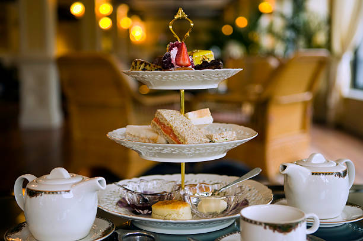
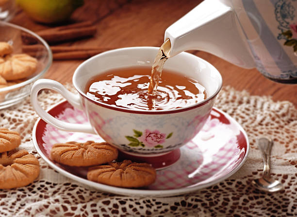
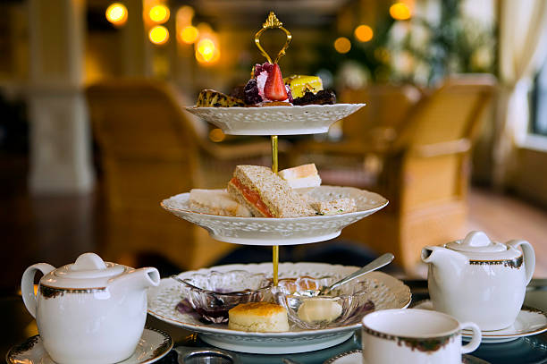
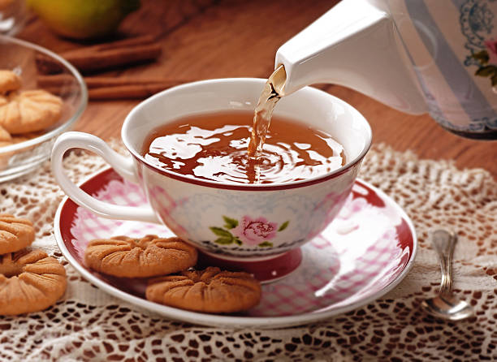
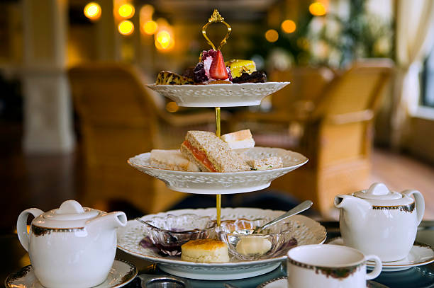
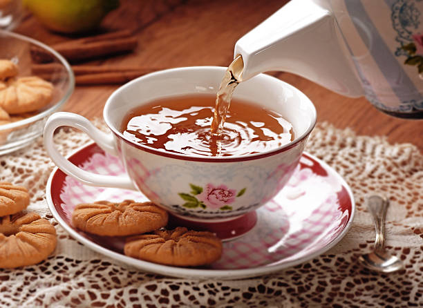

Tearoom
This delightful café is a snug and inviting place, adorned with stylish furnishings that generate a cozy and friendly ambiance. The menu showcases a remarkable assortment of gourmet teas and petite snacks that perfectly complement the tea selections. Whether you're seeking a tranquil nook to unwind and decompress or a snug environment for a close-knit gathering, this café is certain to deliver a pleasurable encounter
Bed and Breakfast Facility
This enchanting inn presents intimate and individually adorned chambers, with genuine hospitality from the cordial proprietors. Awaken to a mouthwatering homemade morning repast and indulge in the inviting common areas and outdoor retreats for relaxation. Positioned in a picturesque spot, this inn provides a distinctive and personalized sojourn that is ideal for wanderers yearning for a familiar haven. This inn facility offers unparalleled provisions.

Related news
Community Guesthouse Embraces Sustainability with Solar Power.
A charming inn in the midst of the urban center is having a significant influence on the ecosystem. The proprietors of the inn have recently implemented a solar power system to energize their establishment, encompassing various guest quarters and communal spaces. This action not only diminishes their environmental impact but also cuts down on their energy expenses.
The photovoltaic panels were mounted on the rooftop of the structure, and have been producing renewable energy for a few weeks already. The proprietors are ecstatic about the outcomes and are exploring additional methods to enhance their eco-friendliness in their functioning. Patrons of the B&B have likewise expressed contentment with the environmentally conscious initiatives and have commended the proprietors for their dedication to sustainability.
This serves as a mere instance of how petite enterprises can wield a substantial influence on the ecosystem. With the escalating call for sustainable excursion alternatives, an increasing number of guesthouse establishments are adopting measures to curtail their environmental footprint and deliver an unparalleled and eco-friendly accommodation encounter for their visitors.
Relevant Content
These guesthouses provide distinctive encounters that extend beyond mere accommodation and breakfast. As an illustration, certain B&Bs offer culinary workshops, wine samplings, or outdoor pursuits such as trekking or horseback excursions.